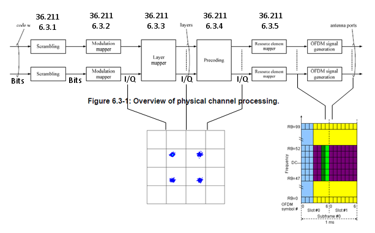
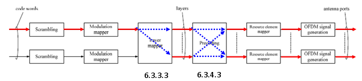
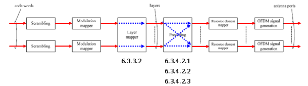

LTE Basic Procedure Go Back To Index Home : www.sharetechnote.com
Physical Channel Processing
This is the process that convert the bit stream coming out of channel encoding process into radio frame data to be transmitted by each antenna.
Overall flow is as shown below and I put the 3GPP specification for each steps. This process is also the one that would be very difficult to understand in very details unless you follow each steps of the procedure written in the specification. But this process is described in a very short mathematical format and it is hard to describe in other way without losing the clarification.
In this section, I would like you to grasp the basic idea of each step.
At lower part of the diagram, I labeled the data format of each step. If you follow those labels, you would know at which steps bit stream is being handled and at which steps I/Q data is handled etc.

One good way for you to study this procedure would be to classify the procedure into several specific cases like SISO, Diversity, 2x2 MIMO etc and mark the path for each case as shown below.
Video Tutorial : http://www.youtube.com/watch?v=u5lStqUlMgU&feature=related
< SISO >
As shown below, marked in red/blue arrow, only one codeword (transport block) comes into the process and directly goes to the antenna. In this case, layer mapper and Precoding steps do almost nothing.

< Tx Diversity >
As shown below, marked in red/blue arrow, only one codeword (one transport blocks) comes into the process and split into two stream (layers) by the layer mapper and finally go out through the two antenna.

< 2 x 2 MIMO >
As shown below, marked in red/blue arrow, two codewords (two transport blocks) comes into the process and goes through the layer mapping without any modification and finally go out through the two antenna. In this case, data goes through very complicated precoding process. As described in the specification, there are three sub steps of procoding process as specified in 36.211 6.3.4.2.1, 36.211 6.3.4.2.2, 36.211 6.3.4.2.3. Depending on whether the 2 x 2 MIMO is Closed Loop Mode or Open Loop Mode, the different combination of the substeps are applied.
